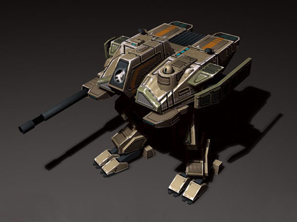
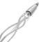
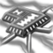

Titan Mk. II
Характеристики товара
- Боевая масса 100 тонн
- Экипаж — 2 человека
- Бронирование
— Адаптивная броня - Вооружение
— 120-мм пушка - Имеются улучшения на "рейлган"
| Стоимость: $7000 |  |
| Дополнение: рейлган |  |
| Дополнение: броня |  |
Титан использует сложный сплав лонжеронов, высокотехнологичный привод и волокнистые сухожилия, которые позволяют высокоскоростное передвижение на двух бронированных ногах. Материалы, необходимые для создания этой системы, стоят дорого, но Титан может перемещаться достаточно быстро, чтобы не отставать от гусеничных танков.
Стальные ноги способны держать на себе отсек с экипажем и электростанцию, а также более 20 тонн передовой брони. Благодаря высокой посадке, Титан обеспечивает своему экипажу лучший вид на поле боя, независимо от препятствий на местности. Это особенно важно, когда Титан охотится на цели высокой важности, такие как Мобильные базы Нод (Crawler).